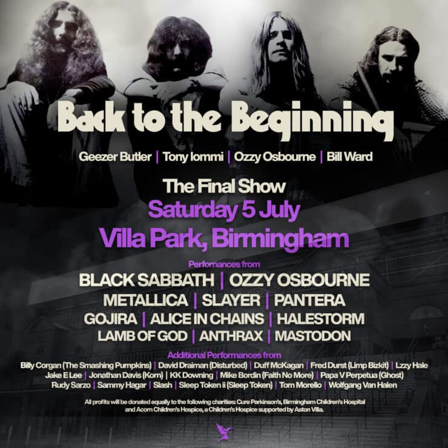
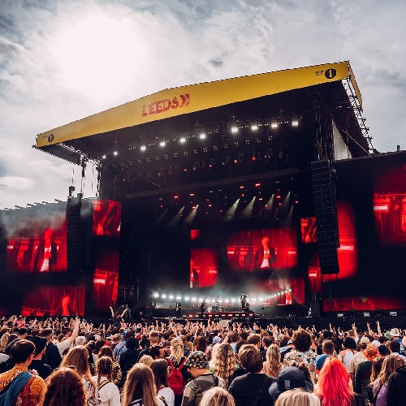
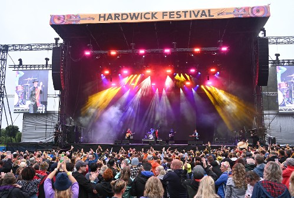
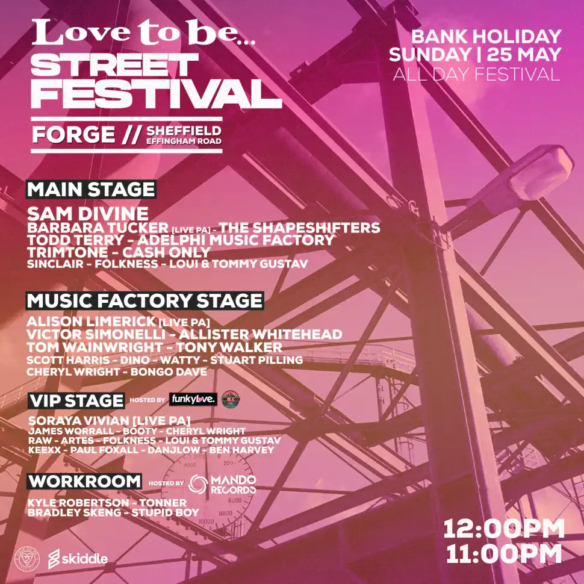

Saturdaty 5 July Back To the Beginning: The Final Concert. Come and see Legends and heavyweights of heavy metal come together to celebrate Ozzy Osbourne and Black Sabbath’s final ever performance on Saturday 5 July at Villa Park, Birmingham.

Leeds Festival.
From Thursday 21st to Sunday 24th August 2025, Leeds Festival at Bramham Park, Leeds, West Yorkshire. from punk and metal, through rock, alternative and indie to dance and nu rave, Leeds offers 80,000 music fans a chance to see hot new acts, and local bands beside big established ones since 1999.
The dates will be over the bank holiday weekend, from Thursday 21st to Sunday 24th August 2025 at Bramham Park, Leeds, West Yorkshire.
Line-up
The headliners have been confirmed as Travis Scott on a European exclusive, Hozier, Chappell Roan, and Bring Me The Horizon. Other acts appearing over the weekend include: Limp Bizkit, D-Block Europe, The Kooks, Becky Hill, Sammy Virji, Bloc Party, Enter Shikari, Conan Gray, AJ Tracey, Trippie Redd, Amyl and the Sniffers, Rudim3ntal, Wallows, Soft Play, Royel Otis, Suki Waterhouse, and more.

Hardwick Festival
Following a trimphant 10th anniversary, Hardwick Festival is back this summer from Friday 15th August to Sunday 17th August 2025 at Hardwick Hall, Sedgefield, in County Durham. Headlining the festival are:
Friday, 15th August: Scissor Sisters
Saturday, 16th August: Pet Shop Boys
Sunday, 17th August: Olly Murs
Other festival highlights over the course of the weekend include Sam Ryder, Royston Club, Rianne Downey, and Charlie Floyd, The Lathums, Everything Everything, The Clause, North Riding, K-Klass, Everly Pregnant Brothers, Rio Sterling, Kerr Mercer, Tom Walker, The K's, Alabama 3, Toploader, Definitely Oasis, The Rosadocs, Twayne, Ste Johnson, The Wailers, Scouting for Girls, Andrew Cushin, Elvana, The Lilacs, Sonny Tennet, Jamie Lawson, D-Ream, Ryder, We Tibetans, Red Room, Park View, and Diago.

Love to be Street Festival.
Love to Be is taking over Forge & Effingham Road and bring a full festival production to the city with a full line up over 4 stages as well as entertainers, street food, merch stalls and much more.
Line-up
The queen of electronic music and recently voted number 1 House DJ (DJ Awards) Sam Divine headlines alongside the iconic Barbara Tucker (Live) Todd Terry, The Shapeshifters and a stacked main stage line up.
The Music Factory stage features the biggest classic House names including New York's Victor Simonelli and Alison Limerick performing 'Where Love Lives' Live.
Mando Records host The WorkRoom